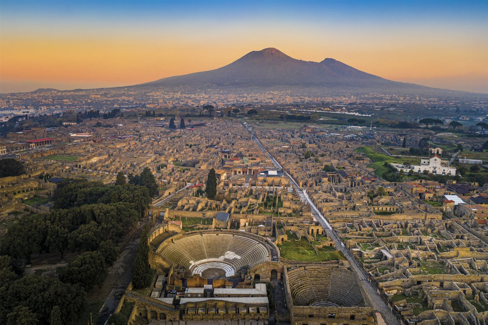

01 — La ciudad viva
Antes de la tragedia, Pompeya era una ciudad ruidosa y próspera. Mercados repletos, baños públicos, teatros, termas y hasta su propio anfiteatro.
Bahía de Nápoles · Año 79 d.C.
La ciudad borrada del mapa

01 — La ciudad viva
Antes de la tragedia, Pompeya era una ciudad ruidosa y próspera. Mercados repletos, baños públicos, teatros, termas y hasta su propio anfiteatro.

02 — La calma
Sus habitantes estaban acostumbrados a algunos temblores, pero no podían imaginar que el volcán que dominaba el horizonte llevaba siglos acumulando su furia.
El día en que el cielo
se volvió negro.

03 — La furia
El Vesubio despertó con una violencia imposible de detener. Una nube de gases, ceniza y material cubrió el cielo. En pocas horas, la ciudad quedó sepultada. Miles de personas perdieron la vida sin poder escapar.

04 — La ceniza
La ceniza no solo sepultó.
También conservó.
1669
años que la ciudad estuvo fuera de todo mapa, sepultada bajo varios metros de ceniza.

¿Cuándo volverá a despertar?
¿Qué hacemos con la memoria que ya dejó?
En la corriente del diseño digital, el registro del proceso no es un anexo: es parte de la pieza. Esta sección documenta las decisiones que sostienen la narrativa.
Pompeya condensa una tensión universal: la fragilidad de lo cotidiano frente a la naturaleza, y el modo en que una catástrofe se transforma en memoria. Es un hecho global con resonancia local —vivimos sobre fallas, volcanes y riesgos que preferimos ignorar—. El tema habilita una mirada crítica, empática y reflexiva: no narramos sólo una ruina, sino qué hacemos hoy con lo que dejó.
Informar el hecho histórico (erupción, sepultamiento, redescubrimiento y conservación) sin perder la carga emotiva. La intención no es enumerar datos, sino hacer sentir el tiempo: el de la ciudad viva, el del silencio bajo tierra y el del presente que excava. El mensaje guía toda la pieza por encima del ornamento —primacía del concepto—.
Desarrollar este proyecto nos llevó a comprender que el diseño no es decoración del contenido: es su forma de existir. Trabajar con una temática densa (la muerte, la memoria, el tiempo) exigió tomar cada decisión con fundamento: ¿este color intensifica o distrae? ¿esta animación ayuda a entender o es ruido? Concluimos que la narrativa visual más efectiva es la que el usuario recorre sin notar el andamiaje —solo siente el peso del relato—. También confirmamos que la interactividad con intención (excavar, descender, explorar la línea del tiempo) genera una experiencia más activa y memorable que la lectura pasiva.
La estructura es un descenso. El scroll funciona como excavación: bajar es adentrarse en los estratos de ceniza (de ahí el indicador de “profundidad”). El ritmo alterna escenas a pantalla completa con intersticios tipográficos de respiro y tensión. La jerarquía se ordena por escala: las capitales romanas de Cinzel para los hitos monumentales y Montserrat para el relato y las etiquetas técnicas. La interactividad es sobria —parálax sutil, apariciones por desenfoque (como objetos que emergen de la ceniza) y una línea de tiempo que se recorre con el propio gesto del scroll—.
La estética refuerza el mensaje sin competir con él. Los textos viven en tarjetas de vidrio esmerilado que garantizan legibilidad sobre las imágenes; el color nace del propio material (ceniza, brasa, lava, ámbar). Las animaciones son lentas y graves, acordes a un relato de duelo y permanencia. Nada se mueve “porque sí”: cada recurso traduce una idea del contenido.
El proyecto adopta la corriente del diseño digital en su vertiente conceptual. Se materializa en decisiones concretas:
Dos familias, dos tiempos.
Cinzel
Capitales romanas inspiradas en inscripciones lapidarias. Títulos, años e hitos monumentales — la voz del pasado clásico, tallado en piedra.
Montserrat
Sans geométrica contemporánea, de uso extendido en la web (y originada en los carteles del barrio Montserrat de Buenos Aires). Cuerpo de texto, subtítulos y etiquetas en mayúsculas con tracking — la voz digital que lee el pasado desde la pantalla.
Dos tipografías = dos tiempos: Cinzel, capitales romanas talladas (lo clásico sepultado), y Montserrat, sans geométrica y contemporánea (la mirada digital que lo examina y lo narra). La paleta no se inventa: se extrae del material del relato —ceniza, brasa y ámbar—, de modo que el color sea el tema. El conjunto busca solemnidad sin frialdad: una pieza que informa, conmueve y, sobre todo, advierte.